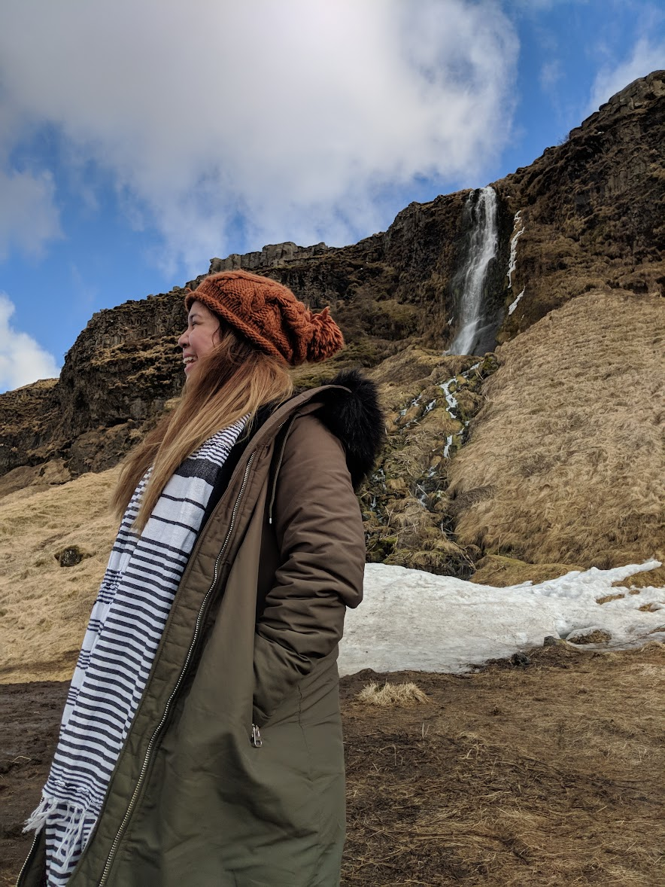

Bachelor of Science, Computing Science
University of Alberta
Major in Computing Science, minor in Spanish. Team projects include Munch (CMPUT 404, Web Applications and Architecture) and EventBuddy (CMPUT 301, software engineering).

I'm a computer science student at the University of Alberta, graduating in April 2027 with a minor in Spanish.
Most of my projects are in Python. The largest is Munch, a federated social network built with Django and Django REST Framework. I also make small games and Minecraft mods for fun. As for Spanish, I translated Souvankham Thammavongsa's short story "You Are So Embarrassing" into Spanish, my first literary translation.
A new grad backend software engineering role starting in 2027. I'm open to remote work or relocating from Edmonton.
Education and work, newest first.
University of Alberta
Major in Computing Science, minor in Spanish. Team projects include Munch (CMPUT 404, Web Applications and Architecture) and EventBuddy (CMPUT 301, software engineering).
Worley
Produced P&IDs, line lists and isometric drawings, and put together construction packages for maintenance outages at the Suncor Edmonton Refinery.
NAIT
Team of 5
A federated social network where people on different servers can follow, like and comment on each other's posts.
Discord bot
A Discord bot that tracks habits, times focus sessions and keeps reminding you until a task is done.
Team of 6
An Android app for running events, with QR code check-in, waitlists and admin moderation.
macOS app
A macOS menu bar app that shows the file you have open in Xcode as your Discord status.
A port of tildejustin's zero-tick-crops (opens in a new tab) Fabric mod to Minecraft 26.3 that brings back 0-tick plant growth.
A Nokia-style snake game controlled with trackpad swipes. The snake gets faster every time it eats.
A road-crossing game that times each run and keeps your best time. Art by Kenney, music by Section 31.
Get in touch
Email is the best way to reach me!